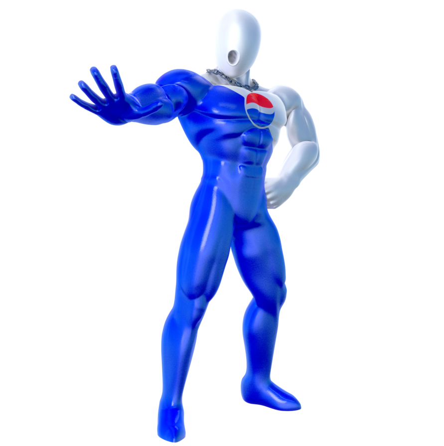

En realidad Pepsiman fue la mascota de Pepsi pensada para el publico de Japón. Este personaje fue protagonista de una serie de comerciales en donde siempre iba al rescate de personas en apuros y solucionaba siempre el problema con una Pepsi aunque el mismo no acabe bien parado. Tiene el superpoder de disparar Pepsi de sus manos, teniendo como misión refrescar a todas las personas con sed del mundo
Origen de Pepsiman
4 de Marzo de 1990. Fue creado por una empresa con sede en japon especializada en portar y desarrollar juegos bishojos, llamados: Kindle Imagine Develop. El diseño del personaje "Pepsiman" se atribuye al dibujante de cómics canadiense Travis Charres, creándolo en algún momento alrededor de mediados de los 90s. La gran mayoría de su historia consiste en satisfacer a la gente con su refresco Pepsi
Curiosidades de Pepsiman
Realmente el juego de pepsiman no es un juego pirata. Es un juego oficial y solo se lanzo exclusivamente en Japon
El actor encargado de popularizar a pepsiman en japon fue, Mike Butters. Un actor que ha trabajado Para peliculas como saw, encerrados y titanic. El actor viajo a japon para hacer los anuncios Los cuales acabaron tambien en el mismo juego
Tras varias entrevistas a los programadores del videojuego, estos declararon que la clara referencia e inspiracion para hacer pepsiman fue Crash Bandicoot
El juego fue un fracaso en ventas en Japon
El lore del personaje esta oculto, dentro de algunos juegos
Existe una pepsi Woman. La cual fue inventada para promocionar una pepsi baja en calorias